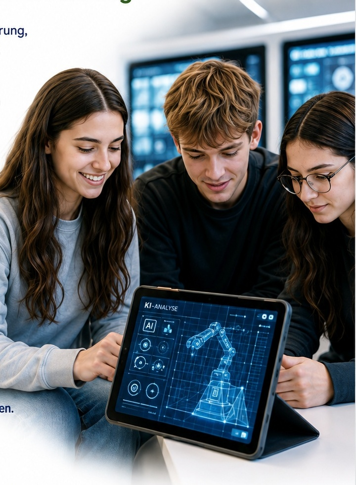
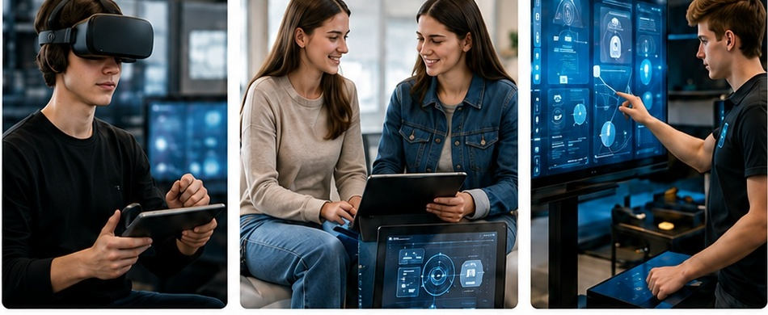
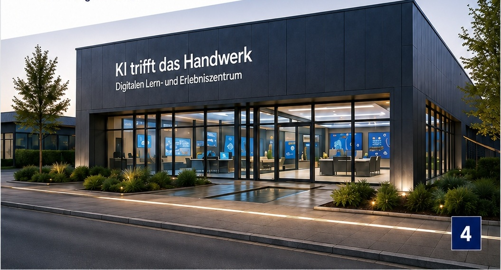
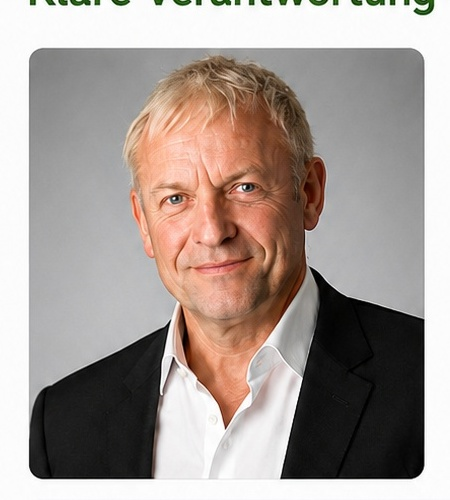
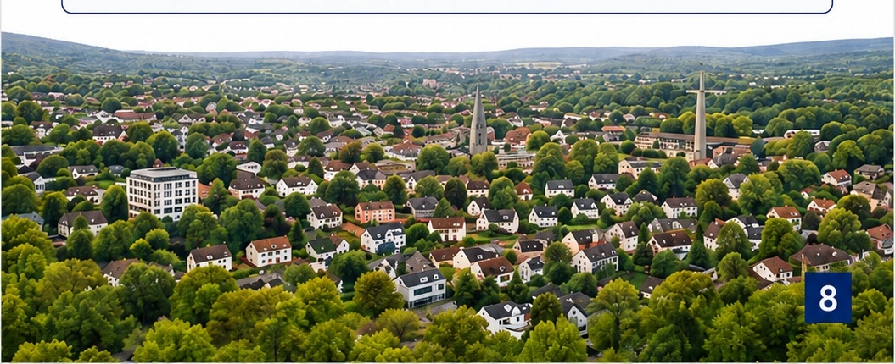

Nicht alle Fähigkeiten.
Nicht alle Interessen.
KI TRIFFT
DAS HANDWERK
Ein Vorhaben in Planung
Digitale Berufsorientierung,
Zukunftstechnologien.
Ausbildung stärken.
Pilotregion Kreis Mettmann

1
1 · Warum dieses Projekt?
Berufsorientierung digital und modern denken
Viele junge Menschen kennen die beruflichen Möglichkeiten
im Handwerk und in der Industrie kaum ausreichend.
Gleichzeitig verändern Digitalisierung, Künstliche Intelligenz
und neue Technologien die Arbeitswelt.
„KI trifft das Handwerk“ verbindet diese beiden
Entwicklungen – moderne Berufsorientierung mit einem
realistischen Blick auf die Arbeitswelt von morgen.
Nicht alle lernen über
die klassische Lehrwerkstatt.
Sondern an einer neuen Schnittstelle zwischen
Schule, Arbeitswelt und Ausbildung.
Schule, Arbeitswelt und Ausbildung.
ERLEBEN
ENTDECKEN
ORIENTIEREN
ERPROBEN
AUSBILDUNG
2
2 · Was soll erreicht werden?
Interesse wecken. Orientierung ermöglichen.
Ausbildung stärken.
Ausbildung stärken.
Interesse wecken
Junge Menschen frühzeitig für moderne Berufsbilder,
Handwerk, Industrie und neue Technologien begeistern.
Orientierung erhöhen
Eigene Interessen, Talente und berufliche
Möglichkeiten besser erkennen.
Übergänge schaffen
Aus ersten Erlebnissen konkrete Wege zu Betrieben,
Bildungseinrichtungen und Ausbildung entwickeln.
Ausbildung stärken
Unternehmen und Institutionen dabei unterstützen,
potenzielle Nachwuchskräfte früher zu erreichen.

3
3 · Das geplante Pilotmodell
Ein zentraler Lern- und Erlebnisort
im Kreis Mettmann
im Kreis Mettmann
Für die Pilotphase ist ein zentraler Standort
mit maximal 500 m² Bildungsfläche vorgesehen.
Geplant sind:
- vier getrennte Erlebnisräume
- ein eigener Bereich für Betrieb und Vernetzung
- digitale Lernräume und Informationssysteme
- Simulationen, VR/XR und KI-gestützte Anwendungen
- mobile Demonstratoren und reale Anwendungsbeispiele
Keine klassischen Werkstätten und keine
traditionellen Produktionsmaschinen.
traditionellen Produktionsmaschinen.
Praktische Erfahrungen erfolgen gemeinsam mit
Partnerbetrieben, Bildungsanbietern und externen
Ausbildungswerkstätten.

4
4 · Wie kann ein solches
Projekt entstehen?
Von der Idee zum tragfähigen Pilotprojekt
1
Idee & Projektarchitektur
Zielbild, Bildungslogik und
Gesamtmodell entwickeln.
2
Partner & Träger
Bildung, Regionen, Handwerk, Industrie
und geeignete Träger zusammenbringen.
3
Finanzierung & Organisation
Trägerschaft, Fördermöglichkeiten,
Standort und operative Verantwortung klären.
4
Pilot aufbauen
Angebotsbausteine schaffen, Standort
realisieren und gemeinsam mit Schulen erproben.
5
Verstetigen
Erfahrungen sichern und eine langfristig
tragfähige Betriebsstruktur aufbauen.
5
5 · Rollen und
Verantwortlichkeiten
Klare Verantwortung – gemeinsam entwickeln

Michael Glanz
Initiator und Projektarchitekt
Unternehmensberatung Glanz
Entwicklung der Projektidee,
strategische Gesamtarchitektur,
Aufbau der Partnerschaft und
Begleitung der Entwicklung
und Pilotphase.
Projektträger
Geeignete institutionelle Organisation
Verantwortung für Governance, rechtliche
Rahmenbedingungen und strategische Ausrichtung.
Operative Projektleitung
Beim Träger oder separat organisiert
Projektplanung, Partnerkoordination, Standort,
Beschaffung, Personal und Projektcontrolling.
Betreibergesellschaften
Langfristige institutionelle Struktur
Dauerhafter Betrieb, Personal, Organisation
und Weiterentwicklung.
Die konkrete Träger- und Betriebsstruktur wird gemeinsam
mit den beteiligten Partnern entwickelt.
mit den beteiligten Partnern entwickelt.
6
6 · Gemeinsam statt nebeneinander
Bestehende Kompetenzen verbinden
KTDH soll keine Parallelstruktur schaffen.
Das Projekt soll vorhandene Kompetenzen
miteinander verbinden.
KI trifft das
Handwerk
Handwerk
Schulen &
Bildung
Bildung
Kammern
Industrie &
Ausbildungs-
betriebe
Ausbildungs-
betriebe
Technologie-
partner
partner
MINT- und
Bildungsnetzwerke
Bildungsnetzwerke
Handwerk &
Innungen
Innungen
Kreis &
Kommunen
Kommunen
7
7 · Wo stehen wir heute?
Konzipiert – und jetzt gemeinsam weiterentwickeln
✓
Konzept entwickelt
Bildungs- und Übergangslogik sowie Grundmodell sind ausgearbeitet.
✓
Pilotregion definiert
Der erste Pilot ist für den Kreis Mettmann vorgesehen.
✓
Inhalte vorbereitet
Bildungsmodule, Website, Broschüren und Partnerunterlagen liegen vor.
✓
Regionale Validierung
Gespräche mit Institutionen und möglichen Partnern
werden geführt und vorbereitet.
✓
Träger & Finanzierung
Geeignete Trägerschaften und mögliche Förderwege
werden im nächsten Schritt konkretisiert.
Der nächste Schritt:
Aus einem Konzept gemeinsam
ein Pilotprojekt machen.
Aus einem Konzept gemeinsam
ein Pilotprojekt machen.

8